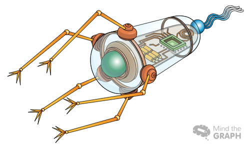
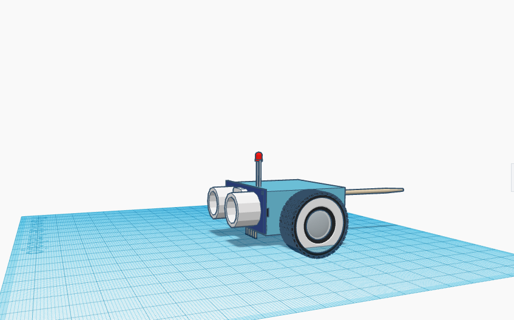
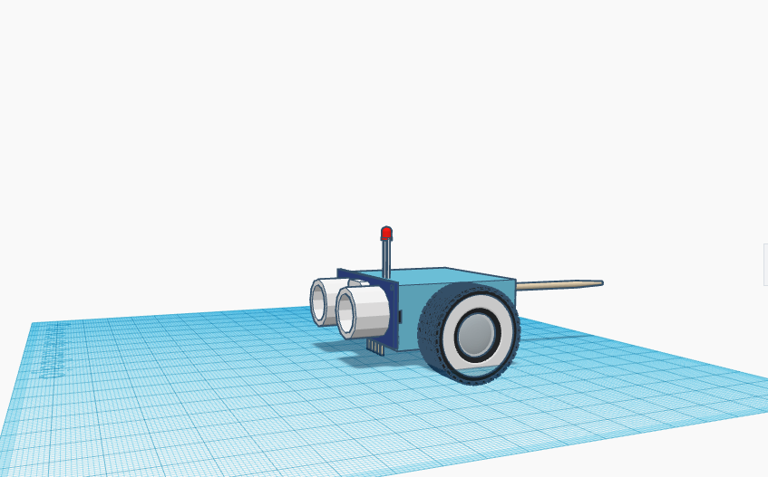

Our hypothesis is to make a equipped robot with sensors that will regularly measure the urine and blood as well as review plus monitor any signs of the kidneys malfunction. With this simple robot people should be able to live without any complications related to kidney issues.

DUDE is a robot that will be checking if the user has a problem in the already mensionete urinary-system, but how this would happens to expleined better we have to se the symtoms that this kind of deseases can make by using this we would be able to creat a robot that can detect by sensors the affected areas and notify the user.Body System

These are some of theparts that will be part of the robot:
For more information Programming
- Sensors
- Camera
- Has a bacterial flagellum to move in to the body
 
